界面组成 >
主界面分为三部分。上部为查询及操作栏，包含上线，下线的操作；下部为数据显示列表，显示每一条具体的数据，右侧为选择具体类型的对象（包括设备，线路，网点IP）
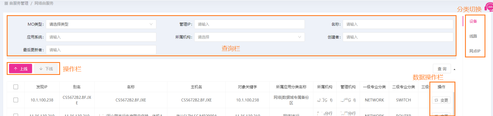
主界面按钮说明如下：
| 操作 |
说明 |
图例 |
| 上线 |
对一个（设备，线路，网点IP）进行上线操作。 |
|
| 下线 |
对勾选的某一个或几个（设备，线路，网点IP）进行下线操作。 |
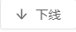
|
| 变更 |
对列表中某一监控对象进行变更。 |
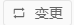 |
上线
下面以设备上线为例，如下图：
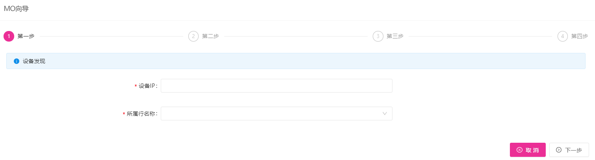
首先第一步要输入一个还未上线的设备IP，并选择所属行，系统会对此设备进行自动发现及信息同步；
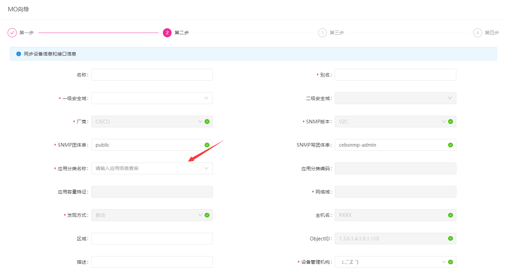
第二步在同步信息的基础上填入或修改设备的信息值，例如，应用分类名称这个选择框是一个查询框，需要手动输入关键字才能进行选择;
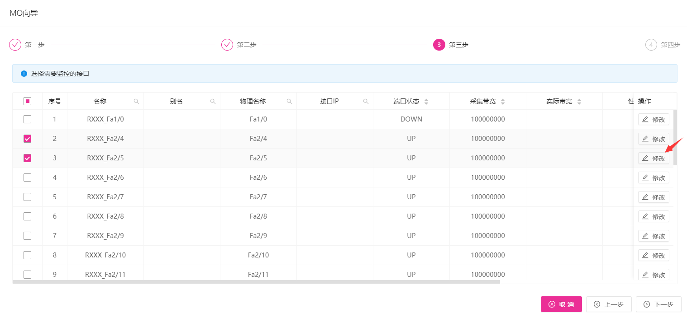
完成上一步之后，可以看到接口选择页面，就是需要选择要监控的接口，可以通过点击右边的修改按钮，修改接口的实际带宽等，选择完之后点下一步;
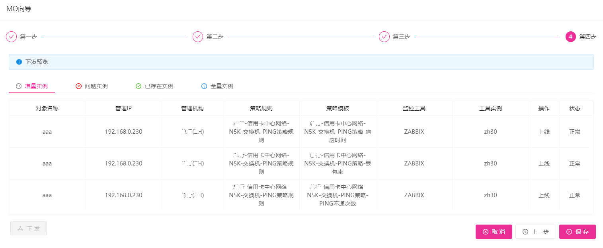
最后一步是下发预览列表，可以看到所有的增量实例，问题实例，已存在实例和全量实例，点击保存按钮可以将设备信息入库，点击下发按钮可以下发具体的监控指令，下发成功之后，就完成了上线操作。
下线
在列表中选择一条或多条数据，然后点击下线按钮，当提示下线状态修改成功之后，该条数据就成功下线了，下线的结果可以在列表中在线状态一栏看到。
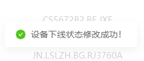
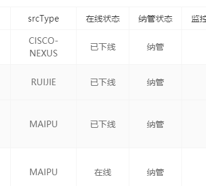
 ➡
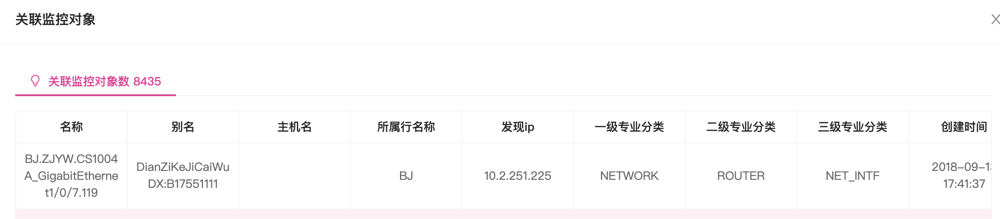
➡
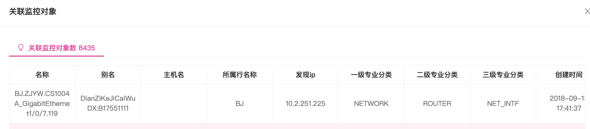


 ➡
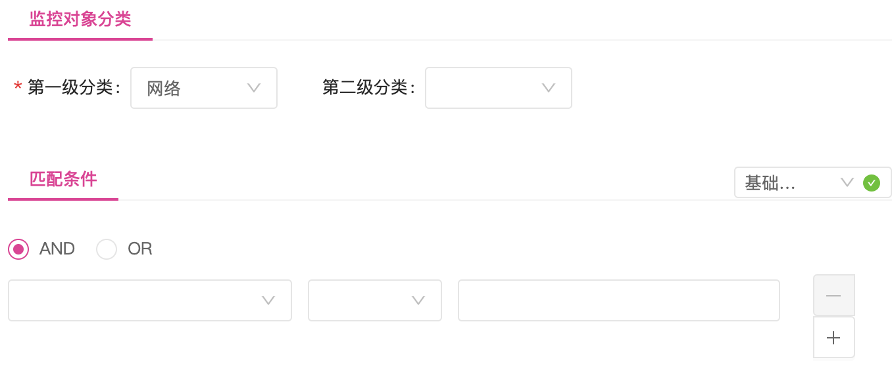
➡
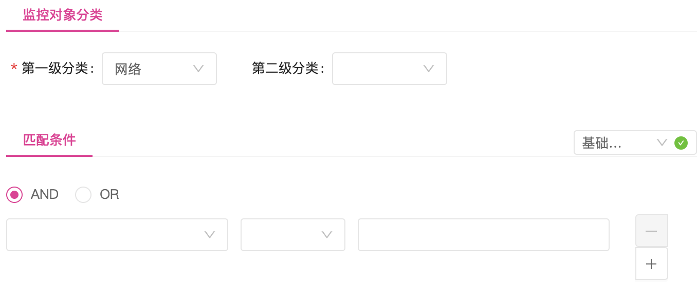